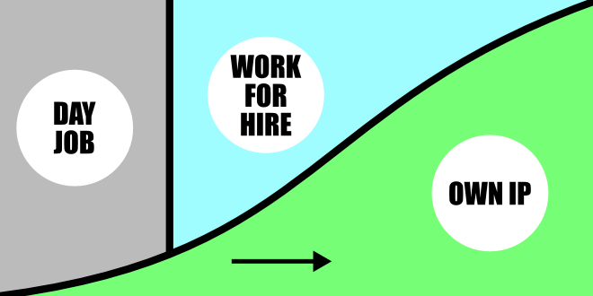

How many hours do you work each day? No. I mean, how many hours do you work each day?
Take a stopwatch to work. Pause it when you: make a coffee, have a chat, go to the bathroom, have a smoke, check your emails, the boss asks you something, you go to a meeting, need more coffee after the meeting, have lunch, have a smoke, read "work-related" online articles, doze off, have a snack, check the train timetables. Are you feeling sheepish?
The working day of traditional hunter-gatherer societies is less than five hours on average. I once spent a weekend living off the land in Australia, eating tiny sour berries, tasteless roots, and nutty grubs. Our guide told us he had got his daily hunting-and-gathering routine down to two hours. A maximum of four or five hours of actual work per day seems to be an in-built limit of our physiology. Pressure from society, poverty, or financial obligations might push us over that limit; but it's not a sustainable, healthy, or enjoyable life.
Once your side projects have advanced to the stage where you can quit, you can use your time flexibility and a four-hour-workday pattern to give you a competitive advantage over those in a day job. Here's the short version:
Hopefully you will earn more, despite working less. You can spend more time on developing your own intellectual property, meeting with potential collaborators, doing extra sales work, getting fit, meeting the love of your life, taking a gamble on an interesting project, or just doing whatever you want. In future posts I'll give you some ideas for things you can do when you get those extra precious hours of your life back.
In a typical eight hour working day, the four hours of "real" work are stretched out over the whole day. Inevitably, "productivity-per-hour" drops, the pace slackens, and distractions get found.
Next time you are in an office, try to spot all the empty time-filling rituals: meetings where the same results will occur regardless of what is discussed, waiting for compiles, uploads, or downloads to finish, pointless paperwork and process, "industry news" reading, office politics; all just useless filler to make up the remaining four hours in the day. It's factored into wages, office layout, and working culture.
Compare Finland's fixed 7.5 hour working day to Germany's 8+ hour working day. This means that all the workers in Germany will sneak their collective iPads into the office toilet and read das Bild for at least an extra thirty minutes per day, compared to the Finns. Add overtime, and those workers are going to be exhausted, making mistakes, bitter, and looking for any opportunity for tufta.
As an individual, you are losing this time out of your life. On the other hand, this only costs a company a slightly larger electricity bill to keep the lights on longer. The big institutions in society don't care if you are wasting your life; another reason to avoid being part of them.
For an architect, working until 7PM or longer is a must in most companies. And even though I rarely agreed to work past 6PM, even the 8-hour workday is ridiculous in my opinion. NOBODY can work efficiently for more than 5-6 hours. Most of the work is done in the morning before lunch break. Then the productivity drops. When I decided to freelance again, I had only one goal: work much less and earn more.
Now I work from approximately 8:30 till 15:00 (with about 1,5h lunch break). Work takes only half of my day now, leaving the rest of it to enjoy the wonderful life. And I travel however the hell often I want.
Katarzyna Terlikowska
It's possible that I have an unconscious bias towards sitting by the lake all day with a bottle of Sekt (and other such activities), rather than working. Therefore, I looked for extra supporting evidence.
- When estimating a project with the Scrum methodology, "ideal engineering hours" are used. This is the amount of actual productive work that will be done per calendar day by the typical engineer. All the reputable estimates I found online for "ideal engineering hours" per day were between four and six hours. On my teams it was always five.
- In the 30s, W.K Kellogg (yes, from the cereal company), reduced the shifts at his factory from eight hours to six. The efficiency gains were so spectacular that he wrote: "we can afford to pay as much for six hours as we formerly paid for eight" *. This system dropped out of favour during the rise of consumerism, but survived until the Reagan years.
Who Stole the Four-Hour Workday? An interesting and conveniently timed article on VICE.
The "four-hour workday" happens to be a socialist slogan from the 30s. The Industrial Workers of the World argued that it would have social benefits, such as reducing unemployment and improving the quality of life for workers and their families. Maybe next year I'll be marching through Kreuzberg on May the 1st waving a "four hour workday" banner.
However, my goal isn't a socialist utopia. The sad fact is that in today's society, humans are largely sidelined, whereas business entities are respected and empowered. Make yourself into a business and you'll have more freedom at this point in history.
If society is a pond, the capitalist end of it is a more comfortable place to be swimming. I want you to develop your entrepeneurial swimming skills. Once you are comfortable treading water there, you'll have a much better vantage point to save the world with your new-found freedom and resources, rather than choking and drowning as an employee.
Avoid overtime; you will be working badly at your least efficient level. Even if you are working in your own time or really excited by a project, try and spread your energy more evenly. I am guilty of this; for the last few days I have been writing this blog, making a game, and training dance from 8am until I dropped after midnight, and making myself sick.
If you walk out the door after working the hours you are paid for, while everyone else is still chained to their desks, you will come back refreshed the next day and do better work as a result. Nobody will see you as "that lazy sod", but "the one who gets everything done by the end of the day, and doesn't let anyone push them around".
Sure, if there's a deadline, the work has to be done. Maybe the afternoon before a big product launch is not a good time to wave cheerio to your boss with your surfboard under your arm. However, if overtime is anything more than a rare occurrence, treat it as a red flag indicating you should get out of that job.
Never see overtime as a badge of dedication to your career - see it as a failure of management. My friends who have this attitude seem to be the ones who are getting what they want out of their career, not the ones having their life taken away by their work.
I loved working in Finland. It's a uniquely egalitarian society: everyone is on a first-name basis, there is no gender in the language to make male/female distinctions, and naked saunas and beers with your bosses are almost obligatory.
Overtime (paid, of course) seems to be viewed more as a financial punishment for the company, rather than compensation for employees. It's a shameful thing for a boss to have to ask for, rather than an opportunity for them to boast about how "dedicated" they can force their underlings to be.
Overtime suggests a manager doesn't have the ability to manage a project properly, or the guts to fight for sufficient resources for their team. It was a common sight for me to see Finnish bosses shooing their employees out of the office at home-time. Admittedly, I've only experienced working at well-run Finnish IT companies.
I often bill by the hour. And, surprise: I typically bill around 4 or 5 hours a day. Some days I'll feel the inspiration racing in my veins, and work all night through until daylight. Some days I feel slow or just not inspired, and I know I'll set the project back if anything, so I stop work and stop billing the customer. Then I do just about anything else. Anything but waste my life moping around an office pretending to be working. I'm proud to be saving my customers' money and time as I take a siesta.
A great customer opened my eyes to this way of working about ten years ago. She only wanted me to spend the budget while I was at my peak. She would instantly send me home, or to the beach, the moment she heard me yawn or saw my eyes drooping.
Hourly billing has plenty of its own problems, but it's a good place to start. I'll cover how to put together contracts with an hourly rate in a future post.
What does this four-hour-workday mean? I can give my customers the most super-productive, inspired periods of my life, and then spend the rest of the time relaxing and recharging however I want. From the customer's perspective, they are hiring Super James. He performs above the level of the everyday, stupid, lazy and tired Ordinary James. Super James gets things done faster (spread over a longer period) and makes less mistakes.
It's debatable how super Super James really is. However, he's got to be better than Ordinary James, who frequently catches the wrong train, and once left the office unlocked over the weekend. The other week I discovered I'd been cooking with Gelierzucker (gelatine, or "jelly sugar"). I'd thought I'd been choosing the best type, because I'd misread it as 'Geilerzucker (roughly, "awesomer sugar"). That person shouldn't be writing mission-critical code.
When I start the timer on customer work, it's full power ahead! When I feel myself losing my edge, the timer stops. That time is precious; it gets converted into the dreams of my customers.
Keep a timesheet for each project showing hours for each day, and a description of what you did. It shows your customers that you're spending their money wisely.
Once you are used to working and thinking at this heightened level of ability, it can change your perspective on what is possible within a timeframe. I recently did an 80 hour project spread over a month; someone else had quoted six months' of work.
When I write a proposal, I'll estimate, and then try to knock 20% off my estimate somehow. If I know I will be on top of my game when it comes time to do the work, I will somehow find a way to do it better and faster by putting pressure on myself.
- You can have more proposals pending. If two projects happen to overlap, you can work on both. You are still only working the "typical" minimal workday that most people work.
- You can transfer the super-productive work habits you've learnt from your 4-hour-a-day routine to a temporary 8-hour schedule if needed (with the help of coffee and a "productivity debt" to be paid back later in down-time recuperation).
I imagine you could try this on a flexible part-time contract, and I'd love to hear the results. If it wasn't for the rigid labour laws in Germany, I would have tried this option instead of leaving my last job. Although if your boss is willing to let you go to the park to feed the squirrels and kick the autumn leaves instead of sitting in a meeting, or go and rehearse with your band whenever you felt like it, you probably wouldn't have read this far.
I've come closest to this ideal while working for a large Finnish company. My team and I got in the habit of encouraging each other to work ever faster and more efficiently, and we really bonded and became a powerhouse as a result. One of the guys even went out and bought the Pragmatic Programmer for everyone on the project (note: excellent tips for anyone who cares about their craft).
One of the best ideas we implemented was "radio silence". Every day after lunch, email was closed, Skype was turned off, headphones went on, phones were put into flight mode, and managers left us alone. This was a virtual "four-hour-workday", with all distractions and non-work pushed outside of that zone. Those colleagues have gone on to start their own companies and find places in various wonderfully productive companies.
Leisure is time for doing something useful; this leisure the diligent man will obtain, but the lazy man never; for a life of leisure and a life of laziness are two things.Benjamin Franklin
I've been quite surprised by the response to my last article. Thank you for your feedback and ideas. You're really helping me question and clarify my thoughts, and I'm glad I can give you some ideas.
Each blog post is based around an idea that will help you survive independently of a day job. Maybe you're an employee who feels they are missing something in life. Maybe you're already running a business and want a few tips to improve it. Hopefully the more things I can give you to think about, the more confidence you will have that you can manage on your own.
Here's a "roadmap" of where we want to go with our lives:

Don't take my word for any of these hare-brained schemes: just try them out in a small way and ditch them if they aren't working out. Hopefully after you have read my first post about how to engage with a more interesting life after work, and a few of my future posts, you will start seeing a path towards independence, and some tricks you can use when you get there. Even if you have commitments, children and a fulfilling career, at the very least you might be able to create a more interesting life outside of your day job. You are leaving the window wider open for good things to fly into your life. You will become less dependent on your job to provide your emotional security and identity.
You can also practise being more pro-active in your day job: try some of these ideas in your existing workplace. See yourself as a entrepreneur selling your own ideas. Hopefully, after some time your life outside work will grow large enough to replace your work life.
Future topics: unencumbering yourself of useless baggage, hot tips on how and where to find contracts quickly, how to sell your own ideas, maintaining health and happiness after you throw away society's rulebook, the one-sentence contract, and writing a proposal that cannot be refused.
And please email me with your thoughts - I have plenty of time for you after my four-hour workday! You can follow me on Twitter to get future posts.
James Hudson
It's Monday morning, but I don't have to go to work. Ever again.
Become a Part-Time Superhuman: Work a 4-Hour-Day
Adequate is better than more: your life as the perfect kitchen
This is the Sales Manual you should have been given at graduation
I'll build your app to help you become independent. For free.
Why there is no Facebook killer: the death of the P2P dream
How to become a freelancer in Berlin: the tricks and the traps
How to write a proposal they can't refuse
Programming basics for everyone: how to try coding right now, and why you need to.
Poledancing versus programming: break away from your business and run it remotely.
Needless to say, this blog isn't financial or legal advice, an excuse for getting fired, or promising that any of these ideas will work for you. The companies or people I mention may not agree with my opinions here. Don't do anything reckless, damaging or hurtful to anyone! In the future you might need your bridges unburnt.